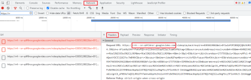
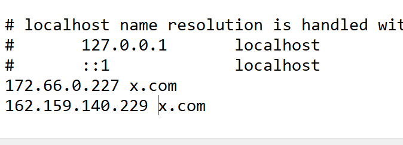

Примечание: На время проверки нужно отключить фаерволл / брандмауэр / антивирус.
Если до этого стоял goodbyedpi, то запустить от имени администратора service_remove.cmd
- Скачать и распаковать архив с zapret (автор bolvan) https://github.com/bol-van/zapret-win-bundle/archive/refs/heads/master.zip
Примечание для системы x32 либо windows 7:
На x32 zapret не работает, а на windows 7 нужно скопировать файлы WinDivert.dll и WinDivert64.sys из папки x86_64\ с goodbyedpi и заменить в zapret-е в 2 местах: blockcheck\zapret\nfq\ и zapret-winws\
- Зайти в папку
blockcheck. Сохранить туда 2 файла quic_initial_google_com.bin и tls_clienthello_www_google_com.bin - Перезаписать файл
blockcheck.cmdтаким: blockcheck.cmd - Запустить
blockcheck.cmd. Он спросит:
specify domain(s) to test. multiple domains are space separated.
domain(s) (default: rutracker.org) :
- Запустить ролик на ютубе
- открыть лог браузера по F12 или CTRL+SHIFT+J, выбрать вкладку Сеть или Network,
- скопировать адрес GGC вида
rr*.....googlevideo.com
 - вставить его в окне blockcheck (можно добавить несколько адресов через пробел),
- нажать Enter
- Когда blockcheck спросит
check https tls 1.3 (default : N) (Y/N) ?
Нажать Y и Enter, на все другие вопросы жать Enter.
7. Дождаться выполнения скрипта - рядом с blockcheck.cmd появится blockcheck.log - в конце файла в разделе * SUMMARY будут рабочие конфиги для zapret-а вида winws --wf-l3=ipv4 --wf-tcp=443 --dpi-desync=fake --dpi-desync-ttl=1 (в качестве примера). Можно так же поискать в файле строчку !!!!! AVAILABLE !!!!!. Строка перед ней , начинающаяся с winws - это рабочий конфиг.
8. Перейти в папку zapret-winws и создать файл test.cmd. Открыть его в текстовом редакторе, прописать в него конфиг из п.7
(!) Если blockcheck в п.7 не выдал ни одного конфига , нужно запустить _CMD_ADMIN.cmd , вставить в окне winws --wf-tcp=443 --wsize 1500, нажать Enter, и перепроверить, начиная с п.4
Если при этом конфиг с --wf-tcp=443 найдется, то добавить к этому конфигу в test.cmd в самый конец --wsize=1500
9. Запустить test.cmd, проверить, разблокировался ли ютуб?
Если не работает, в браузере попробовать выставить параметры Kyber и QUIC на стандартные (в firefox в адресной строке перейти сюда about:config, в хромообразных сюда chrome://flags и искать по названию параметра, прим.: в firefox quic обозначается как network.http.http3.enable)
Если конфигов несколько, можно проверить каждый по очереди.
Если все ок - можно пользоваться zapret либо переделать конфиг zapret-а под goodbyedpi
приблизительно так
--dpi-desync=split2 - это -e2 либо -e2 --native-frag
--dpi-desync=disorder2 это -e2 --reverse-frag
--dpi-desync=split или --dpi-desync=fake,split2 - это -e2 плюс какой-либо фейк (--wrong-seq / --wrong-chksum / --fake-from-hex n / --fake-gen n)
--dpi-desync=disorder или --dpi-desync=fake,disorder2 - это -e2 --reverse-frag плюс какой-либо фейк (--wrong-seq / --wrong-chksum / --fake-from-hex n / --fake-gen n)
--dpi-desync-ttl=n это --set-ttl n
--dpi-desync-fooling=badseq это --wrong-seq
--dpi-desync-fooling=badsum это --wrong-chksum
--dpi-desync-fake-tls=n это --fake-from-hex n
--dpi-desync-repeats=n это --fake-resend n
Добрый день, не вижу в 6ом пункте адрес GGC rr*googlevideo.com - ни в консоли его нет, ни в Network
Какой браузер, хром? Найдите красный запрос videoplayback?expire=
щелкните по нему и скопируйте адрес rr--чего-тотамgooglevideo.com
Щедро, но зачем ему ваш сервер? у него своих полно)
А что “мой” типо не будет работать? И он не мой а гугловский.
Если вы с ним в соседних домах живете и с одним провайдером - то может и будет) А так - обычно у каждого провайдера свои кеширующие сервера гугла (GGC)
Понял. Но уже пробывал так скидывать. Работало у других. Или были случаи когда это не работает?
Может провайдер один, кто знает. А может, просто у большинства провайдеров ggc пробиваются похожей стратегией. Но бывают и особые случаи. Вы наверно не застали тут описание проблем со скайнетом)
Да в курсе. Но у меня подгружает GGC европейские поэтому должно работать
Извините за нубство, я просто за это не шарю: не могу найти вкладку “заголовки” и вот эту панельку слева - “Название”
А, хотя нет - увидел где название - просто у меня там нет videoplayback, вот это
В разных браузерах по-разному просто
А, все, нашел все. Просто ролик должен быть запущен, а не на паузе
Все сделал, как в шапке темы - ничего не получается, все тоже самое(((
Скинь сюда конфиг который ты запускаешь.
–wf-tcp=443 --dpi-desync=split2
–wf-tcp=443 --dpi-desync=disorder2
один из них точно должен работать, либо ты делаешь что то не так.
winws --wf-l3=ipv4 --wf-tcp=443 --dpi-desync=fake --dpi-desync-ttl=2
–dpi-desync-fake-tls= C:\Users\gewer\OneDrive\Документы\zapret-win-bundle-master\blockcheck\zapret\files\fake\tls_clienthello_www_google_com.bin
Там кажется пробел у вас лишний, попробуйте
winws --wf-l3=ipv4 --wf-tcp=443 --dpi-desync=fake --dpi-desync-ttl=2 --dpi-desync-fake-tls=C:\Users\gewer\OneDrive\Документы\zapret-win-bundle-master\blockcheck\zapret\files\fake\tls_clienthello_www_google_com.bin
Кроме пробела после fake-tls=
еще и с кодировкой вопрос. Русские буквы в пути.
Если запуск идет через батник, там должна быть кодировка 866.
Если через ярлык - там пишется как пишется
@bolvan Скажите, пожалуйста, можно ли вернуть кнопку редактирования своей же темы, хотя б на время? Если нельзя, то у кого есть такие права?
А то ребята подсказали, что в моем гайде ошибка. Должно быть так:
Скрипт спросит
check https tls 1.3 (default : N) (Y/N) ? Y- нажать Y и enter
Отчего кстати проверка tls 1.3 по умолчанию отключена? Есть ведь причина?
Еще хотелось бы уточнить, нужно ли в блокчеке для ggc отключать проверку сертификатов do not verify server certificate (default : N) (Y/N) ?
Заранее спасибо!
К ValdikSS - основателю форума.
tls 1.2 - более тяжелый случай. Можно сказать гиря 50 кг.
tls 1.3 - гиря 20 кг
кто поднимет 50, с 20 точно справится
tls 1.3 имеет смысл искать только если нет ничего хорошего для tls 1.2
поднять 50 не осиливаем, так хотя бы 20. лучше, чем ничего
а зачем ? если домен введен правильно, там будет норм сертификат. если плохой - это подмена. мегафон так делает.
если натравлено на https://googlevideo.com, то это глупость большая
Большое спасибо за ответ! В принципе, исходя из него можно и не дергать ValdikSS
У меня как раз мегафон. На поиск стратегий подмена сертификата не влияет?
Не-не, такого мы не делаем)
@ValdikSS Помогите плс с правами на редактирование собственной темы
Спасибо!
А это нужно делать для каждого сервера вида rr*.....googlevideo.com? Их там довольно много. У меня пока всё работает, спрашиваю на всякий случай. Я до чтения вашей темы из интереса пробовал просто googlevideo.com, но блокчек не нашёл ни одной рабочей стратегии обхода.
Думаю, для парочки неработающих будет достаточно. У меня к примеру иногда не работают ggc провайдера, а иногда зарубежные, они отличаются и по названию и по диапазону ip. А для googlevideo.com просто нет смысла проверять, это же не конкретный сервер, скорее, что-то вроде балансера, если правильно понимаю.
А как можно эту информацию использовать для настройки goodbyedpi?
Какую информацию? Блокчек вам выдал какую-то стратегию?
Еще бы какую-то карту расшифровки для переконвертирования в GBDPI.
Ну вот получил я результаты
--wf-l3=ipv4 --wf-tcp=443 --dpi-desync=fake --dpi-desync-ttl=4
--wf-l3=ipv4 --wf-tcp=443 --dpi-desync=disorder2
Как это будет выглядеть для goodbyedpi?
--wf-l3=ipv4 --wf-tcp=443 --dpi-desync=fake --dpi-desync-ttl=4
Наверно так.
--wrong-seq --set-ttl 4 --fake-gen 1
И пробовать --fake-gen увеличивать на единичку, пока не заработает.
--wf-l3=ipv4 --wf-tcp=443 --dpi-desync=disorder2
По идее так:
-e 2 --reverse-frag
А может и -e 1 --reverse-frag
Подробное описание всех параметров запрета тут zapret/docs/readme.txt at master · bol-van/zapret · GitHub, а gdpi тут GitHub - ValdikSS/GoodbyeDPI: GoodbyeDPI — Deep Packet Inspection circumvention utility (for Windows)
Спасибо --wrong-seq --set-ttl 4 --fake-gen 1 заработал как есть, до этого подобрал рабочую комбинацию --wrong-chksum --fake-gen 13.
Описание проектов я читал, но это никак не позволяет чайнику сложить 2+2, ибо аргументы проектов не унифицированы между собой. Там оно так, а тут эдак )
Ну да, это разные проекты)
Выдал, но она не работает даже с запретом 
А что выдал, для какого сервера и как выглядит ваша командная строка?
Здравствуйте, подобрал рабочие параметры на windows в cmd файле с ними ютуб работает:
winws --wf-l3=ipv4 --wf-tcp=443 --dpi-desync=split2 --dpi-desync-fake-tls=tls_clienthello_www_google_com.bin, Но мне нужно поставить их в роутер,
# CHOOSE NFQWS DAEMON OPTIONS for DPI desync mode. run "nfq/nfqws --help" for option list
DESYNC_MARK=0x40000000
DESYNC_MARK_POSTNAT=0x20000000
NFQWS_OPT_DESYNC="--dpi-desync=split2 --dpi-desync-fake-tls=/opt/zapret/files/fake/tls_clienthello_www_google_com.bin"
#NFQWS_OPT_DESYNC_HTTP=
#NFQWS_OPT_DESYNC_HTTPS=
#NFQWS_OPT_DESYNC_HTTP6=
#NFQWS_OPT_DESYNC_HTTPS6=
NFQWS_OPT_DESYNC_QUIC="--dpi-desync=split2 --dpi-desync-fake-tls=/opt/zapret/files/fake/tls_clienthello_www_google_com.bin"
#NFQWS_OPT_DESYNC_QUIC6=
С этими параметрами не работает, как их адаптировать под роутер? --wf-l3=ipv4 --wf-tcp=443 - нужно ли писать?
Вот про роутер честно скажу - не знаю, у меня hotspot на windows. Лучше спросить здесь Zapret: обсуждение - #891 by anonymous168, там автор запрета и много других знающих людей
Тестил для rr4---sn-gvnuxaxjvh-3ggz.googlevideo.com, нашёл что
* SUMMARY
ipv4 rr4---sn-gvnuxaxjvh-3ggz.googlevideo.com curl_test_http : working without bypass
ipv4 rr4---sn-gvnuxaxjvh-3ggz.googlevideo.com curl_test_https_tls12 : winws --wf-l3=ipv4 --wf-tcp=443 --dpi-desync=fake --dpi-desync-ttl=1
ipv4 rr4---sn-gvnuxaxjvh-3ggz.googlevideo.com curl_test_https_tls13 : winws --wf-l3=ipv4 --wf-tcp=443 --dpi-desync=disorder2
ipv4 rr4---sn-gvnuxaxjvh-3ggz.googlevideo.com curl_test_http3 : winws not working
Пробовал оба предложенных варианта, с выключением/включением кубера, с добавлением (и не добавлением) faketls как в шапке указано.
До изменений 21-22 чисел норм работал goodbyedpi с параметром “1”
После - перепробовал многое, включая уникальный хекс и fake-gen от 1 до 30 и все встречные -e -f и пр. комбинации из оригинальной темы.
Странно конечно. А вот с таким фейком у вас не заработает? (сохраните в ту же папку, откуда запускаете запрет)
tls_clienthello_translate_google_com.bin (320 байтов)
winws --wf-l3=ipv4 --wf-tcp=443 --dpi-desync=fake,disorder2 --dpi-desync-ttl=1 --dpi-desync-fake-tls=tls_clienthello_translate_google_com.bin
По идее, у вас и gdpi с до неприличия простой настройкой должно работать)
-e 2 --reverse-frag
Или так:
--wrong-seq --set-ttl 1
Вообще не понимаю как это нечто заставить работать…
Создал файл .cmd, прописал туда такое:
winws --wf-l3=ipv4 --wf-tcp=443 --dpi-desync=split2 --dpi-desync-split-tls=sni --dpi-desync-split-pos=3 --dpi-desync-fake-tls=tls_clienthello_www_google_com.bin --hostlist=“%~dp0russia-blacklist-youtube.txt”
Почему-то открывает сразу 2 окна (скриншот). Ютуб при этом выдаёт пустую белую страницу вообще без чего-либо.
Без --hostlist=“%~dp0russia-blacklist-youtube.txt” тоже пробовал, то же самое.
Вместо winws попробуйте прописать start "Zapret" /min "winws.exe" и дальше параметры. По идее первое окно должно просто закрываться после запуска winws.
Ещё можно попробовать от админа это делать, чтобы привилегий хватало прямо в окне консоли запустить.
Для ютуба, у большинства, работает стратегия --dpi-desync=split2 --dpi-desync-split-seqovl=1. Остальное можете попробовать из неё выкинуть.
Убери это зачем такой огород городить. И вообще что тебе блок чек выдает? По blablabla.googlevideo.com?
Так вообще не запускается.
start “zapret” /min “winws.exe” --dpi-desync=split2 --dpi-desync-split-seqovl=1
Пытается что-то открыть и мгновенно закрывает окно.
Блокчек мне, кстати, вот такое выдавал:
ipv4 rr1---sn-4g5lznes.googlevideo.com curl_test_http : working without bypass
ipv4 rr1---sn-4g5lznes.googlevideo.com curl_test_https_tls12 : winws --wf-l3=ipv4 --wf-tcp=443 --dpi-desync=disorder2
ipv4 rr1---sn-4g5lznes.googlevideo.com curl_test_https_tls13 : winws --wf-l3=ipv4 --wf-tcp=443 --dpi-desync=split2 --dpi-desync-split-tls=sni
ipv4 rr1---sn-4g5lznes.googlevideo.com curl_test_http3 : winws not working
ipv4 rr3---sn-q4fl6nd7.googlevideo.com curl_test_http : working without bypass
ipv4 rr3---sn-q4fl6nd7.googlevideo.com curl_test_https_tls12 : winws --wf-l3=ipv4 --wf-tcp=443 --dpi-desync=disorder2
ipv4 rr3---sn-q4fl6nd7.googlevideo.com curl_test_https_tls13 : winws --wf-l3=ipv4 --wf-tcp=443 --dpi-desync=split2 --dpi-desync-split-pos=3
ipv4 rr3---sn-q4fl6nd7.googlevideo.com curl_test_http3 : winws not working
ipv4 rr8---sn-n8v7kn7z.googlevideo.com curl_test_http : working without bypass
ipv4 rr8---sn-n8v7kn7z.googlevideo.com curl_test_https_tls12 : winws --wf-l3=ipv4 --wf-tcp=443 --dpi-desync=split2
ipv4 rr8---sn-n8v7kn7z.googlevideo.com curl_test_https_tls13 : winws --wf-l3=ipv4 --wf-tcp=443 --dpi-desync=split2
ipv4 rr8---sn-n8v7kn7z.googlevideo.com curl_test_http3 : winws not working
Я имел в виду убрать лишние фильтры дурения, а не вообще всё.
--wf-l3=ipv4 --wf-tcp=443 --dpi-desync=split2 --dpi-desync-split-seqovl=1
Попробуй это
start “zapret: http,https” /min “%~dp0winws.exe” --wf-l3=ipv4 --wf-tcp=80,443 --dpi-desync=split2
Полная строка
Создай файл my config.cmd и туда эту строку полностью, потом редактируй по желанию.
start “zapret: http,https” /min “%~dp0winws.exe” --wf-l3=ipv4 --wf-tcp=80,443 --dpi-desync=split2
А подряд два отдельных --hostlist в запрете будут работать? Чтобы и другие сайты разблокировать, и при этом отдельно хранить ютубовские домены и всё остальное.
Вроде такого:
–hostlist=“%~dp0russia-blacklist.txt” --hostlist=“%~dp0russia-youtube.txt”
Или тут применится только один из них, и лучше всё в один файл запихать?
Тут не подскажу тебе в ветку zapret обсуждение
Раньше точно работало. Скорее всего, работает и сейчас. Засунь 2 хостлиста и проверь.
Проверьте плс по очереди все эти 6 стратегий из окна _CMD_ADMIN.cmd (пока без хостлиста, нужно просто найти рабочую, файл tls_clienthello_www_google_com.bin должен лежать в той же папке)
start "zapret" /min "winws.exe" --wf-l3=ipv4 --wf-tcp=443 --dpi-desync=disorder2 --dpi-desync-fake-tls="tls_clienthello_www_google_com.bin"
start "zapret" /min "winws.exe" --wf-l3=ipv4 --wf-tcp=443 --dpi-desync=fake,disorder2 --dpi-desync-autottl=2 --dpi-desync-fooling=md5sig --dpi-desync-fake-tls="tls_clienthello_www_google_com.bin"
start "zapret" /min "winws.exe" --wf-l3=ipv4 --wf-tcp=443 --dpi-desync=split2 --dpi-desync-split-tls=sni --dpi-desync-fake-tls="tls_clienthello_www_google_com.bin"
start "zapret" /min "winws.exe" --wf-l3=ipv4 --wf-tcp=443 --dpi-desync=fake,split2 --dpi-desync-autottl=2 --dpi-desync-fooling=md5sig --dpi-desync-split-tls=sni --dpi-desync-fake-tls="tls_clienthello_www_google_com.bin"
start "zapret" /min "winws.exe" --wf-l3=ipv4 --wf-tcp=443 --dpi-desync=split2 --dpi-desync-split-pos=3 --dpi-desync-fake-tls="tls_clienthello_www_google_com.bin"
start "zapret" /min "winws.exe" --wf-l3=ipv4 --wf-tcp=443 --dpi-desync=fake,split2 --dpi-desync-split-pos=3 --dpi-desync-autottl=2 --dpi-desync-fooling=md5sig --dpi-desync-fake-tls="tls_clienthello_www_google_com.bin"
А есть какое-то отличие в подборе конфига не для ютуба?
Для twimg.com, например, блокчек вообще ничего не находит.
А он жив вообще? Для него нет никаких ip DNS Checker - DNS Check Propagation Tool
Без него x.com почти не работает, дальше стартовой заглушки с X не уходит, упорно пытаясь подключиться к abs.twimg.com.
С дешёвым 100-рублевым прокси сразу начинает работать.
Ааа, так и нужно искать конфиг для поддомена abs.twimg.com, не для twimg.com. У последнего даже ip нет)
Добавьте перенаправления в etc/hosts. Сто раз уже об этом говорилось. С кривыми стратегиями, из разряда --fake-gen 29, ломается tls 1.2.
Ну и, как выше написали, надо тестить не twimg.com, а его поддомены.
192.229.233.50 pbs.twimg.com
152.199.21.141 abs.twimg.com
192.229.220.133 video.twimg.com
Мне кстати блокчек такое выдал (без доп фейков)
ipv4 abs.twimg.com curl_test_http : winws --wf-l3=ipv4 --wf-tcp=80 --hostcase
ipv4 abs.twimg.com curl_test_https_tls12 : winws --wf-l3=ipv4 --wf-tcp=443 --dpi-desync=split2
ipv4 abs.twimg.com curl_test_https_tls13 : winws --wf-l3=ipv4 --wf-tcp=443 --dpi-desync=split2
ipv4 abs.twimg.com curl_test_http3 : winws --wf-l3=ipv4 --wf-udp=443 --dpi-desync=fake
start "zapret: http,https,quic" /min "%~dp0winws.exe" --wf-l3=ipv4 --wf-tcp=80,443 --wf-udp=443 --filter-udp=443 --dpi-desync=fake --new --filter-tcp=80 --hostcase --new --filter-tcp=443 --dpi-desync=split2
И работает с doh без правки hosts. Но эти адреса не грузятся , им другой конфиг подавай
abs-0.twimg.com
pbs.twimg.com
video.twimg.com
Попробовал прописать это в hosts, результата никакого.
Хром вообще вот такое выдаёт: net::ERR_CERT_COMMON_NAME_INVALID.
И что блокчек напроверял:
ipv4 abs.twimg.com curl_test_http : winws not working
ipv4 abs.twimg.com curl_test_https_tls12 : winws --wf-l3=ipv4 --wf-tcp=443 --dpi-desync=fake --dpi-desync-ttl=6
ipv4 abs.twimg.com curl_test_https_tls13 : winws not working
ipv4 abs.twimg.com curl_test_http3 : winws not working
А так?
209.237.192.139 twitter.com
209.237.192.139 www.twitter.com
209.237.192.139 x.com
209.237.192.139 www.x.com
104.244.42.66 api.x.com
152.199.24.185 abs.twimg.com
192.229.233.50 pbs.twimg.com
192.229.220.133 video.twimg.com
А так работает, спасибо.
Но куда эти редиректы ведут? Главная страница грузилась в сумме 17+ секунд.
Можно красивше причесать)
209.237.192.139 twitter.com www.twitter.com x.com www.x.com
104.244.42.66 api.x.com
152.199.24.185 abs.twimg.com
192.229.233.50 pbs.twimg.com
192.229.220.133 video.twimg.com
Несколько дней назад очень быстро работало, щас хз что произошло, у меня тоже лаг дикий. Вот инструкцию кто-то публиковал как это всё искать:
Спойлер
Например X:
- Заходим на https://dns.google/
- Нам нужны IP-адреса разных стран. Используем DNS lookup через Google на популярные домены за рубежом: bbc.co.uk, quora.com, naver.com, foxnews.com, rakuten.co.jp, verizon.com, и т.п.
- Выполняем lookup x.com, используя IP-адреса этих сайтов как EDNS Client Subnet, повторяем для каждого домена/адреса
- Полученные IP-адреса, при запущенном GoodbyeDPI, проверяем на работоспособность: curl -v --connect-to ::ip-адрес-x-com-здесь https://x.com
Если сайт ответил по этому IP-адресу — добавляем его в hosts
Альтернативный вариант:
- Скачиваем nmap
- Идём на bgp.he.net за диапазонами Twitter AS: AS13414 Twitter Inc. - bgp.he.net
- Запускаем сканирование какого-то смежного диапазона, в надежде, что он тоже настроен на приём входящих подключений: nmap -n -T5 -p443 --open 104.244.41.0/24
- Вручную проверям работоспособность IP-адресов: curl -v --connect-to ::ip-адрес-x-com-здесь https://x.com
А через безопасный dns у вас не открывается? Все ip заблочены что ли?
Да я в Твиттере вообще не сижу, другие ip не проверял. А безопасный dns это типа DoH?
Ну да, он самый.
DoH включен, сайт открывается, но дикий лаг до twimg. Может другие айпишники и быстрее будут, не знаю.
3-ий пункт не понял
Выполняем lookup x.com, используя IP-адреса этих сайтов как EDNS Client Subnet, повторяем для каждого домена/адреса
Если попроще, это что конкретно сделать нужно?
А вы попробуйте сначала doh включить , любой из этих
Спойлер
https://common.dot.dns.yandex.net/dns-query
https://dns.comss.one/dns-query
https://dns.adguard-dns.com/dns-query
https://dns.cloudflare.com/dns-query
https://doh.opendns.com/dns-query
Это же проще и быстрее гораздо
Например хотим проверить abs.twimg. Идем на https://dns.google/, и вводим условный bbc.co.uk. Получаем айпишник “151.101.128.81”. Там же вводим этот айпишник в EDNS Client Subnet, а как DNS Name вводим “abs.twimg.com”, нажимаем Resolve. Получаем айпишник “199.232.40.159”.
Потом вводим curl -v --connect-to ::199.232.40.159 https://abs.twimg.com
Ну типа того, как я понял.
Но я пользовался альтернативным варинатом. В bgp.he.net вбивал этот айпишник от twimg (199.232.40.159), сайт выдавал диапазон типа “199.232.0.0/16”, ну и дальше по той инструкции.
А если а меня прямо в настройках роутера прописаны клаудфлэерские 1.1.1.1 и 1.0.0.1, это не то же самое?
это то самое, но надо еще doh включить, если он не включен
И в огнелисе и в хроме DoH по умолчанию было включено на что-то дефолтное. А раз в роутере прописаны адреса клаудфлэйра, это самое “дефолтное” не эти значения должно использовать?
Зайдите на 1.1.1.1 — One of the Internet’s Fastest, Privacy-First DNS Resolver
Connected to 1.1.1.1 Yes Using DNS over HTTPS (DoH) Yes Using DNS over TLS (DoT) No Using DNS over WARP No AS Name Cloudflare AS Number 13335 Cloudflare Data Center DME
Ну вот, DoH включен.
Doh, как выяснилось, включён, но тогда что должно быть “проще и быстрее”?
в firefox в about:config какое значение стоит в network.trr.mode ?
network.trr.mode 0
Не все doh выдают незабаненные ip. Проще включить в браузере и перебрать разные doh. Ну мне точно проще, а как вам не знаю
Это настраивается здесь about:preferences#privacy
Выбрать макс защиту и другой url
ето странно, ну ладно возможно так дефолтная настройка работает, лишь бы в about:networking#dns trr было true
А в запрете как-то можно указать редирект на нужного поставщика ДНС, на подобии такого в GDPI?
–dns-addr 77.88.8.8 --dns-port 1253 --dnsv6-addr 2a02:6b8::feed:0ff --dnsv6-port 1253
Чтобы не все запросы через них пускать, если вдруг медленными будут.
Честно говоря не знаю, надо смотреть в ридми. Если что у меня твиттер работает со всеми картинками с doh https://dns.cloudflare.com/dns-query и preset_russia.cmd . Довольно шустро. Причем это же более универсально, чем ip к каждому адресу подбирать. Тут и рутрекер без обхода открывается, и нельзяграмм и многое др
Альтернативные айпишники от гугл.днс можно еще через командную строку искать. Тут пишем какой-нибудь рандомный айпи:
curl "https://dns.google/resolve?name=x.com&type=A&edns_client_subnet=150.150.100.100"
В зависимости от скормленного айпи ответ может быть разным.
В теории можно написать скрипт. Пингуем гугл другой страны (например, google.nl). Берем айпи. Подставляем его в ссылку выше. Парсим ответ. Возможно, получаем альтернативный айпи для искомого сайта (если он есть).
Может быть позже напишу.
Написал.
Скрипт для поиска альтернативных айпи для любого сайта. Использует гугловский днс, отправляя запрос с кастомным сабнетом. Сабнет получается из списка заранее прописанных айпишников, либо пингуя заранее прописанные домены. Список доменов надо подправить, чтобы там были сайты из разных стран.
Принимает переменные среды: verbose (с любым значением) для наглядного отображения работы; и proxy в стандартном формате (типа proxy=socks5://127.0.0.1:9150).
Прокси добавил, т.к. боюсь, что сотню днс запросов за 10 секунд днс гугла может понять неправильно.
Скрипт текстом:
Спойлер
::by Ori
@echo off
chcp 65001
title IP finder
cls
::Setting up proxy or taking it from env if needed
rem set "proxy=socks5h://127.0.0.1:8086"
if defined proxy (
set "proxy= --proxy %proxy%"
)
::Enabling verbose mode or taking it from env; any value is accepted
if not defined verbose (
set verbose=
)
SetLocal EnableDelayedExpansion
::Lists of random domains from all around
rem set "domainsList=google.us google.nl google.pl"
rem set "ipList=50.50.50.50 100.100.100.100 150.150.150.150"
::Forming IP list artificially
for /L %%i in (10,10,250) do (
for /L %%j in (10,20,250) do (
set "ipList=!ipList!%%i.%%j.128.128 "
)
)
set "ipList=!ipList:~0,-1!"
::Converting lists into arrays
set domainsArrayLength=-1
for %%i in (%domainsList%) do (
set /A domainsArrayLength+=1
set domainsArray[!domainsArrayLength!]=%%i
)
set domainsEndsHere=!domainsArrayLength!
for %%i in (%ipList%) do (
set /A domainsArrayLength+=1
set domainsArray[!domainsArrayLength!]=%%i
)
:INPUTURL
cls
if defined verbose (echo Using in verbose mode)
if defined proxy (echo Using with proxy)
echo.
::User input
set /P site="Input URL to check: "
if "%site%"=="" (goto INPUTURL)
echo.
if not defined verbose (
echo It may take some time...
echo.
)
::Main routine
set successes=-1
for /L %%i in (0,1,%domainsArrayLength%) do (
::Pinging site to find an IP for subnet and parsing result
title Progress: %%i out of %domainsArrayLength%
set "subnetIP="
if %%i LEQ !domainsEndsHere! (
for /F "tokens=1,3" %%j in ('ping -n 1 -w 2000 !domainsArray[%%i]!') do (
if "%%j"=="Reply" (
set "subnetIP=%%k"
set subnetIP=!subnetIP:~0,-1!
)
)
) else (
set "subnetIP=!domainsArray[%%i]!"
)
if defined subnetIP (
::Resolving DNS of a user-defined site while using custom subnet
if defined verbose (echo Resolving DNS with subnet !subnetIP! ^(!domainsArray[%%i]!^))
set response=
for /F "tokens=4* delims=[]" %%j in ('curl!proxy! -skm 1 "https://dns.google/resolve?name=%site%&type=A&edns_client_subnet=!subnetIP!"') do (set response=%%j)
::Some other DNS resolvers? This one kinda slow, but gives additional results
for /F "tokens=4* delims=[]" %%j in ('curl!proxy! -skm 1 "https://doh.li/dns-query?name=%site%&type=A&edns_client_subnet=!subnetIP!"') do (set response=!response!,DOHLI,%%j)
if "!successes!"=="-1" (
for /F "tokens=4* delims=[]" %%j in ('curl!proxy! -skm 1 -H "accept: application/dns-json" "https://1.1.1.1/dns-query?name=%site%&type=A"') do (set response=!response!,CLOUDFLARE,%%j)
for /F "tokens=4* delims=[]" %%j in ('curl!proxy! -skm 1 -H "accept: application/dns-json" "https://dns.nextdns.io/dns-query?name=%site%&type=A"') do (set response=!response!,NEXTDNS,%%j)
for /F "tokens=4* delims=[]" %%j in ('curl!proxy! -skm 1 -H "accept: application/dns-json" "https://dns.adguard-dns.com/resolve?name=%site%&type=A"') do (set response=!response!,ADGUARD,%%j)
)
if defined response (
if defined verbose (echo Response from DNS: !response!)
set response=!response:{= !
set response=!response:}= !
) else (
if defined verbose (echo No response from DNS)
)
::Parsing response
for %%j in (!response!) do (
rem echo %%j
for /F "tokens=1,2 delims=:" %%k in ("%%j") do (
if %%k=="data" (
::Checking if valid IP
set "ipCandidate=%%~l"
set "ipCandidate=!ipCandidate:~-1!"
set valid=
for /L %%v in (0,1,9) do (
if "!ipCandidate!"=="%%v" (set valid=1)
)
if defined valid (
::Checking for duplicates and adding new ones in the list
if defined verbose (echo IP found: %%~l Checking for duplicates...)
set duplicates=
for /L %%z in (0,1,!successes!) do (
if "%%~l"=="!successesArray[%%z]!" (
if defined verbose (echo Duplicate found^^!)
set duplicates=1
)
)
if not defined duplicates (
if defined verbose (echo Adding to list...)
set /A successes+=1
set successesArray[!successes!]=%%~l
)
)
)
)
)
) else (
if defined verbose (echo Can't ping !domainsArray[%%i]! for subnet, skipping...)
)
if defined verbose (echo.)
)
title Completed^^!
::Showcasing result
echo List of IP found:
for /L %%i in (0,1,%successes%) do (
echo !successesArray[%%i]!
)
EndLocal
echo.
echo That's all. Press any button to exit...
pause>NUL
title %comspec%
exit /b
Файлом:
IPfinder.cmd (4,3 КБ)
update: искусственная генерация айпи листа для запросов
update: прикрутил днс от клаудфлейр в добавку к гугло.днс
update: добавил ещё несколько днс. Скорость упала, но кол-во результатов выросло. Пытался прикрутить quad9, т.к. тоже есть поддержка edns, но он вообще отказывается работать через курл.
Респект 
Извини, а это нормально out of 324? Что то много и ждать очень долго, у первой версии было 77. Чувствую себя ддосером))
Круть! А можно утащить идею с doh?) А то у меня совсем простенький батник IPChecker.bat (1,7 КБ) , который ищет системный ip через пинг. Потом проверяет курлом - заблокирован или нет? Если да - ищет рабочий ip через nslookup. И снова проверяет его курлом. Идея нагло стырена из блокчека bolvan-а)
Я хз, откровенно говоря 
Думаешь, стоит уменьшить?
Новая версия, кста.
Спойлер
::by Ori
@echo off
chcp 65001
title IP finder
cls
::Setting up proxy or taking it from env if needed
rem set "proxy=socks5h://127.0.0.1:8086"
if defined proxy (
set "proxy= --proxy %proxy%"
)
::Enabling verbose mode or taking it from env; any value is accepted
if not defined verbose (
set verbose=
)
SetLocal EnableDelayedExpansion
::Lists of random domains from all around
rem set "domainsList=google.us google.nl google.pl"
rem set "ipList=50.50.50.50 100.100.100.100 150.150.150.150"
::Forming IP list artificially
for /L %%i in (10,10,250) do (
for /L %%j in (10,20,250) do (
set "ipList=!ipList!%%i.%%j.128.128 "
)
)
set "ipList=!ipList:~0,-1!"
::Converting lists into arrays
set domainsArrayLength=-1
for %%i in (%domainsList%) do (
set /A domainsArrayLength+=1
set domainsArray[!domainsArrayLength!]=%%i
)
set domainsEndsHere=!domainsArrayLength!
for %%i in (%ipList%) do (
set /A domainsArrayLength+=1
set domainsArray[!domainsArrayLength!]=%%i
)
:INPUTURL
cls
if defined verbose (echo Using in verbose mode)
if defined proxy (echo Using with proxy)
echo.
::User input
set /P website="Input URL to check: "
if "%website%"=="" (goto INPUTURL)
echo.
::Parsing user input
set "website=!website:https://=!"
set "website=!website:http://=!"
for /F "tokens=1 delims=/" %%i in ("!website!") do (set "website=%%i")
if not defined verbose (
echo It may take some time...
echo.
)
::Main routine
set successes=-1
for /L %%i in (0,1,%domainsArrayLength%) do (
::Pinging website to find an IP for subnet and parsing result
title Progress: %%i out of %domainsArrayLength%
set "subnetIP="
if %%i LEQ !domainsEndsHere! (
for /F "tokens=1,3" %%j in ('ping -n 1 -w 2000 !domainsArray[%%i]!') do (
if "%%j"=="Reply" (
set "subnetIP=%%k"
set subnetIP=!subnetIP:~0,-1!
)
)
) else (
set "subnetIP=!domainsArray[%%i]!"
)
if defined subnetIP (
::Resolving DNS of a user-defined website while using custom subnet
if defined verbose (echo Resolving DNS with subnet !subnetIP! ^(!domainsArray[%%i]!^))
set response=
for /F "tokens=4* delims=[]" %%j in ('curl!proxy! -skm 1 "https://dns.google/resolve?name=%website%&type=A&edns_client_subnet=!subnetIP!"') do (set response=%%j)
::Some other DNS resolvers? This one kinda slow, but gives additional results
for /F "tokens=4* delims=[]" %%j in ('curl!proxy! -skm 1 "https://doh.li/dns-query?name=%website%&type=A&edns_client_subnet=!subnetIP!"') do (set response=!response!,DOHLI,%%j)
if "!successes!"=="-1" (
for /F "tokens=4* delims=[]" %%j in ('curl!proxy! -skm 1 -H "accept: application/dns-json" "https://1.1.1.1/dns-query?name=%website%&type=A"') do (set response=!response!,CLOUDFLARE,%%j)
for /F "tokens=4* delims=[]" %%j in ('curl!proxy! -skm 1 -H "accept: application/dns-json" "https://dns.nextdns.io/dns-query?name=%website%&type=A"') do (set response=!response!,NEXTDNS,%%j)
for /F "tokens=4* delims=[]" %%j in ('curl!proxy! -skm 1 -H "accept: application/dns-json" "https://dns.adguard-dns.com/resolve?name=%website%&type=A"') do (set response=!response!,ADGUARD,%%j)
)
if defined response (
if defined verbose (echo Response from DNS: !response!)
set response=!response:{= !
set response=!response:}= !
) else (
if defined verbose (echo No response from DNS)
)
::Parsing response
for %%j in (!response!) do (
rem echo %%j
for /F "tokens=1,2 delims=:" %%k in ("%%j") do (
if %%k=="data" (
::Checking if valid IP
set "ipCandidate=%%~l"
set "ipCandidate=!ipCandidate:~-1!"
set valid=
for /L %%v in (0,1,9) do (
if "!ipCandidate!"=="%%v" (set valid=1)
)
if defined valid (
::Checking for duplicates and adding new ones in the list
if defined verbose (echo IP found: %%~l Checking for duplicates...)
set duplicates=
for /L %%z in (0,1,!successes!) do (
if "%%~l"=="!successesArray[%%z]!" (
if defined verbose (echo Duplicate found^^!)
set duplicates=1
)
)
if not defined duplicates (
if defined verbose (echo Adding to list...)
set /A successes+=1
set successesArray[!successes!]=%%~l
)
)
)
)
)
) else (
if defined verbose (echo Can't ping !domainsArray[%%i]! for subnet, skipping...)
)
if defined verbose (echo.)
)
title Completed^^!
::Showcasing result
echo List of IP found:
for /L %%i in (0,1,%successes%) do (
echo !successesArray[%%i]!
)
echo.
choice /C 12 /M "That's all. Press 1 to exit or press 2 to save IP list to a file"
if %ERRORLEVEL%==2 (
PUSHD "%~dp0"
echo !website!> "!website:.=_!.txt"
echo.>> "!website:.=_!.txt"
for /L %%i in (0,1,%successes%) do (
echo !successesArray[%%i]!>> "!website:.=_!.txt"
)
echo.
echo Saved to "%~dp0!website:.=_!.txt"
POPD
echo.
echo Press any button to exit...
pause>NUL
)
echo.
EndLocal
title %comspec%
exit /b
Файлом:
IPfinder.cmd (4,9 КБ)
А можно утащить идею с doh?)
@TesterTi утаскивай 
Update: 3 часа ночи, переписал скрипт (снова).
- Теперь запросы идут параллельно,
чтобы было эффективнее ддоситьчтобы было быстрее. Кол-во потоков можно настраивать. - Добавил вывод листа в файл.
- Добавил несколько “защит от дураков”, чтобы сложнее было сломать скрипт (фильтр протокола, проверка соединения, поддержка кастрированного виндоусовского курла).
- Добавил extra verbose режим для еще лучшего отображения процесса работы.
- И режим emulate, чтобы не ддосить резолверы понапрасну в процессе тестов.
- Выкинул режим с доменами, т.к. не вижу нужды.
Скрипт текстом:
Спойлер
::by Ori
@echo off
chcp 65001
title IP finder
cls
SetLocal EnableDelayedExpansion
::===================================================================================
::Setting up proxy, empty/undefied for no-proxy
rem set "proxy=socks5h://127.0.0.1:8086"
::Verbose mode; empty/undefied for quiet, 2 for extra verbose, any other value for standart verbose
set verbose=
::Emulation mode, without making actual requests; empty/undefied to turn off
set emulate=
::Number of threads, should be >0
set threads=20
::Curl parameters
set params=-s -k -m 2 -H "accept: application/dns-json"
::===================================================================================
::===================================================================================
::Setting up parameter for curl
if defined verbose (
set "params=!params! -S"
)
if defined proxy (
set "params=!params! --proxy !proxy!"
)
if !threads! GTR 1 (
set "params=!params! -Z --parallel-immediate --parallel-max !threads!"
)
::Setting up resolvers
set "requestGoogleDNS=https://dns.google/resolve?name=website&type=A&edns_client_subnet="
set "requestDohLi=https://doh.li/dns-query?name=website&type=A&edns_client_subnet="
set "requestCloudflare=https://1.1.1.1/dns-query?name=website&type=A"
set "requestNextDNS=https://dns.nextdns.io/dns-query?name=website&type=A"
set "requestAdguardDNS=https://dns.adguard-dns.com/resolve?name=website&type=A"
::Forming IP array artificially
set ipArrayLength=0
for /L %%i in (10,10,250) do (
for /L %%j in (10,20,250) do (
set /A ipArrayLength+=1
set "ipArray[!ipArrayLength!]=%%i.%%j.0.0/16"
)
)
::===================================================================================
::===================================================================================
::Checking if connected to web, skipping in emulate mode
if not defined emulate (
ping -n 1 -w 2000 "w3.org">NUL
if not "!ERRORLEVEL!"=="0" (
echo.
echo Can't connect to web, exiting...
pause>NUL
goto EOF
)
)
:INPUTURL
cls
::Showcaing some stuff
if defined verbose (
if "!verbose!"=="2" (
echo Using in extra verbose mode
) else (
echo Using in verbose mode
)
)
if defined emulate (echo Using in emulation mode)
if defined proxy (echo Using with proxy)
if "!verbose!"=="2" (echo Parameters for curl: !params!)
if "!verbose!"=="2" (echo IP addresses for subnet: !ipArrayLength!)
echo.
::User input
set /P website="Input URL to check: "
if "!website!"=="" (goto INPUTURL)
echo.
::Parsing user input
set "website=!website:https://=!"
set "website=!website:http://=!"
for /F "tokens=1 delims=/" %%i in ("!website!") do (set "website=%%i")
if not defined verbose (
echo It may take some time...
echo.
)
::===================================================================================
::===================================================================================
::Main part
set successes=-1
set response=
::One-time request for resolvers without subnet
if not defined emulate (
::Here additional resolvers can be added
for /F "tokens=4* delims=[]" %%j in ('curl !params! "!requestCloudflare:website=%website%!"') do (set response=!response!CLOUDFLARE:%%j)
for /F "tokens=4* delims=[]" %%j in ('curl !params! "!requestNextDNS:website=%website%!"') do (set response=!response!NEXTDNS:%%j)
for /F "tokens=4* delims=[]" %%j in ('curl !params! "!requestAdguardDNS:website=%website%!"') do (set response=!response!ADGUARD:%%j)
) else (
set response=!response!EMULATED:{"data":"0.0.0.0"}
)
::Loop for DNS with subnets
for /L %%i in (1,!threads!,!ipArrayLength!) do (
title IP finder - Progress: %%i out of !ipArrayLength!
::Forming curl input for concurrent requests
set requestParallelGoogleDNS=
set requestParallelDohLi=
set /A "num=%%i+!threads!-1"
if "!verbose!"=="2" (
echo Processing elements %%i-!num!
echo.
)
for /L %%j in (%%i,1,!num!) do (
if %%j LEQ !ipArrayLength! (
::Here additional resolvers can be added
set requestParallelGoogleDNS=!requestParallelGoogleDNS! "!requestGoogleDNS:website=%website%!!ipArray[%%j]!"
set requestParallelDohLi=!requestParallelDohLi! "!requestDohLi:website=%website%!!ipArray[%%j]!"
)
)
if "!verbose!"=="2" (
echo Complete request for GoogleDNS: !params!!requestParallelGoogleDNS!
echo.
echo Complete request for Doh.Li: !params!!requestParallelDohLi!
echo.
)
::Making request
if not defined emulate (
::Here additional resolvers can be added
for /F "tokens=4* delims=[]" %%j in ('curl !params!!requestParallelGoogleDNS!') do (set response=!response!GOOGLEDNS:%%j)
::This one kinda slow, but gives some more results
for /F "tokens=4* delims=[]" %%j in ('curl !params!!requestParallelDohLi!') do (set response=!response!DOH.LI:%%j)
)
::Parsing response
if defined response (
if defined verbose (echo Response from DNS: !response!)
set response=!response:{= !
set response=!response:}= !
for %%j in (!response!) do (
if "!verbose!"=="2" (echo %%j)
for /F "tokens=1,2 delims=:" %%k in ("%%j") do (
if %%k=="data" (
::Checking if valid IP
set "ipCandidate=%%~l"
set "ipCandidate=!ipCandidate:~-1!"
set valid=
for /L %%v in (0,1,9) do (
if "!ipCandidate!"=="%%v" (set valid=1)
)
if defined valid (
::Checking for duplicates and adding new ones to the list
if defined verbose (echo IP found: %%~l Checking for duplicates...)
set duplicates=
for /L %%z in (0,1,!successes!) do (
if "%%~l"=="!successesArray[%%z]!" (
if defined verbose (echo Duplicate found^^!)
set duplicates=1
)
)
if not defined duplicates (
if defined verbose (echo Adding to list...)
set /A successes+=1
set successesArray[!successes!]=%%~l
)
)
)
)
)
set response=
) else (
if defined verbose (echo No response from DNS)
)
if defined verbose (echo -------------)
)
title IP finder - Completed^^!
::===================================================================================
::===================================================================================
::Showcasing result
echo List of IP found:
echo.
for /L %%i in (0,1,!successes!) do (
echo !successesArray[%%i]!
)
echo.
echo Press 1 to exit
echo Press 2 to save IP list to a file
choice /C 12
echo.
::Saving to file if asked
if !ERRORLEVEL!==2 (
PUSHD "%~dp0"
echo !website!> "!website:.=_!.txt"
echo.>> "!website:.=_!.txt"
for /L %%i in (0,1,!successes!) do (
echo !successesArray[%%i]!>> "!website:.=_!.txt"
)
echo Saved to "%~dp0!website:.=_!.txt"
POPD
echo.
echo Press any button to exit...
pause>NUL
)
::===================================================================================
:EOF
EndLocal
title %comspec%
exit /b
Файлом:
IPfinder.cmd (6,8 КБ)
Вот это уже быстро и красиво) Спасибо за труды
А какова задача, цель данного скрипта? Это некий аналог блокчека?
Нет. Это скрипт для поиска альтернативных айпишников для любого сайта (если они есть). Использует механизм ecs, позволяющий получить айпишник в конкретной подсети.
А то есть потом ip в хост надо добавить, или что потом делать с ip адресами?
Ну да. В основном польза только в случае айпи-блокировок. Ну или вон как у некоторых сломался tls v1.2, на том же твиттере. Можно попробовать поискать аналоги с tls v1.3 таким образом.
Все понял. То есть ваш скрипт поможет найти не заблокированный ip шник.
Типа того. Хм, возможно стоит прикрутить автоматическую проверку найденных айпи на работоспособность 
Должно быть достаточно просто.
Было бы интересно вашей утилитой проверить ggc которые выдают ns binding aborted. Наверное она поможет в этом деле.
Не, у ggc вроде всегда только один айпи. Там толку нет альтернативы искать. Это скорее для всяких крупных заблоченных сайтов, типа инстаграмма.
глупый вопрос
Если я использую GoogleDNS, а айпишник например нашёлся на Cloudflare, он для меня будет доступен?
Если да, есть ли смысл тетсировать ip на доступность, но может еще и отображать задержку чтобы использовать ip которые будут быстрее отдавать?
Если вы добавляете найденный айпи в etc/hosts, то вам пофиг на днс, т.к. айпи берется из файла.
может еще и отображать задержку
Как по заказу, новая версия! Теперь она тестирует найденные айпи на предмет таймаутов, ошибок, редиректов, версии tls и наличия quic.
Выкладываю только файлом, потому что кодировки для раскрашивания текста поедут. Да и слишком скрипт распух.
Для тестирования нужен нормальный курл, а не виндоусовский.
IPfinder.cmd (11,9 КБ)
ну вроде всё красиво
А как организовать процесс? По умолчанию юзается виндовский
я скачал последний с сайта и заменил виндовый на новый
для замены надо дать права себе на виндовый курл c:\Windows\System32\curl.exe
можно и указать в скрипте путь к скаченому, можно через переменные думаю тоже
можно скрипт еще больше сделать, проверкой какой курл используется и если не тот что надо рекомендации по обновлению ))
Там и так это уже есть.
Я через winget качал курл. Он вроде должен быть частью современных виндоусов, но я не уверен. Напиши в командной строке winget -v. Если есть то можно через него.
аа отлично) но я еще подумаю что предложить))
было бы круто, но как? впринципе думаю если поищу то найду, если знаете можете написать, думаю будет многим полезно
winget нету, но curl новый есть, им и пользуюсь обычно
Можете просто в папку к курлу положить, должно работать. Либо запихнуть курл в системные переменные.
опа, так просто, кайф, спасибо
Никто тут не хочет записать отдельное видео для гайда?
Какие проблемы? Спрашивай
Хочется “предостраховки” из за страха того, что куда то неправильно нажму. Да и для чайников новых идеально видео с гайдом подойдет
Попробуйте сначала просто запустить preset Russia вы ничего не сломаете. В большинстве случаев этого достаточно для работы ютуба и некоторых заблокированных сайтов
Как оказалось, в прошлой версии я сломал парсер, когда переписывал его для параллельных запросов. В итоге учитывались только результаты из 1 потока.
Исправил. Также немного переделал систему тестирования найденных айпи. Добавил пинг, улучшил проверку редиректа (теперь он реагирует только на смену домена, редиректы из разряда google.com → www.google.com считаются безопасными). В целом сделал отображение покрасивше~
IPfinder.cmd (15,7 КБ)
нет смысла добавить информацию через какой dns какой ip получен?
Там повторы идут от разных днс. Да и смысла в этом нет, мне кажется.
Строки с !!! AVAILABLE !!! искать надо обязательно, SUMMARY обычно короткий. Для powershell (-Context 1,0 в Select-String(sls) выдает искомую строку и строку перед ней)
gc .\blockcheck.log | sls “!!! AV” -Context 1,0
выдаст (nfqws, а не winws потому, что лог от линукса, но это не принципиально)
- checking nfqws --dpi-desync=split2 --dpi-desync-split-seqovl=9 --dpi-desync-split-pos=10 --wssize 1:6
> !!!!! AVAILABLE !!!!!
- checking nfqws --dpi-desync=split2 --dpi-desync-split-seqovl=49 --dpi-desync-split-pos=50 --wssize 1:6
> !!!!! AVAILABLE !!!!!
- checking nfqws --dpi-desync=fake,split --dpi-desync-ttl=1 --dpi-desync-autottl=1 --wssize 1:6 --dpi-desync-fake-tls=0x00000000
> !!!!! AVAILABLE !!!!!
- checking nfqws --dpi-desync=fake,split --dpi-desync-ttl=1 --dpi-desync-autottl=2 --wssize 1:6 --dpi-desync-fake-tls=0x00000000
> !!!!! AVAILABLE !!!!!
- checking nfqws --dpi-desync=syndata,split2 --wssize 1:6
> !!!!! AVAILABLE !!!!!
- checking nfqws --dpi-desync=syndata,disorder2 --wssize 1:6
> !!!!! AVAILABLE !!!!!
У меня ~46 строк (в SUMMARY 3), нашел рабочую.
Более красивый вывод дает (корявенько смотрится, конечно)
gc .\blockcheck.log | sls “!!! AV” -Context 1,0 | ForEach-Object {$_.ToString().Split([Environment]::NewLine)} | sls -Pattern “!!! AV” -NotMatch
- checking nfqws --dpi-desync=split2 --dpi-desync-split-seqovl=9 --dpi-desync-split-pos=10 --wssize 1:6
- checking nfqws --dpi-desync=split2 --dpi-desync-split-seqovl=49 --dpi-desync-split-pos=50 --wssize 1:6
- checking nfqws --dpi-desync=fake,split --dpi-desync-ttl=1 --dpi-desync-autottl=1 --wssize 1:6 --dpi-desync-fake-tls=0x00000000
- checking nfqws --dpi-desync=fake,split --dpi-desync-ttl=1 --dpi-desync-autottl=2 --wssize 1:6 --dpi-desync-fake-tls=0x00000000
- checking nfqws --dpi-desync=syndata,split2 --wssize 1:6
- checking nfqws --dpi-desync=syndata,disorder2 --wssize 1:6
Крутой скрипт! Жаль только, на моей 7-ке спецсимволы криво отображаются
И позвольте тогда уж поделиться и версией 2.0 моего простенького батника:
IPBlockChecker-v2.bat (3,1 КБ)
Основное назначение - проверка, заблокирован ли сайт по системному ip? Если заблокирован, ищет ip через nslookup (dns провайдеры зарубежные). Если нашелся рабочий ip - предлагает добавить перенаправление на него в hosts. Выводит всего 1 рабочий ip, поскольку главная задача - определить сам факт блокировки. Список всех возможных ip ваш скрипт ищет гораздо лучше. Результат пишется в лог для каждого теста.
P.S. По ходу тестов выяснилось, что мой провайдер блокирует по ip из всех сайтов только нельзяграмм. Почему именно его - загадка)
Эффекта 0.
blockcheck.log (179,5 КБ)
UPD: ВСё работает! Я до этого 6 часов с этим ковырялся, наконец-то ютуб грузит. Че я только не пробовал.
Видимо у меня что-то с командной строкой не так было, ибо только запуск _CMD_ADMIN помог и уже оттуда запуск test.cmd
Но почему-то не могу заставить это работать с task_create. Только через cmd_admin работает с запуском test.cmd.
В планировщике задача работает, но эффекта нет. В чем проблема? Уже всё перепробовал. Только через запуск командной строки в папке работает, и уже из этой командной строки, запуск test.cmd.
Если тоже самое сделать в планировщике, никакого эффекта. Если запускать на ПКМ, так же никакого эффекта. Окно проскавает на милисекунду и всё.
Если запускать через CMD_ADMIN там прям пишет, виндиверт запустился и т.п.
Починил. Просто добавил команду прям в cmd_admin и затем добавил в планировщик задач.
Красивый у вас скрипт, с отдельными вызываемыми функциями и т.д. А у меня так просто поток сознания, а не скрипт 
Кстати, я только сейчас, прочитав ваш пост, понял что мне вообще в голову не пришло использовать nslookup или встроенный в курл --doh (или как там правильно параметр выглядит). Вместо этого городил костыли. 
А мне наоборот ваш подход понравился, буду изучать)) Но для меня он немного сложноват. Я не программист ни разу (думаю, из никнейма понятно), только самые основы понимаю и все. Поэтому и использую простые функции, чтоб не запутаться. А в батнике у меня лютая логическая ошибка, только сейчас дошло, буду переделывать.
я правильно понимаю, что в моем случае нет доступных вариантов для x.com?
Судя по скрину у вас старая версия, потому что последняя версия выглядит не так. По результату хз. Возможно нет доступных вариантов, возможно скрипт сломан 
теперь вот так:
подскажи пожалуйста для тупого, что дальше сделать -_-
я пробовал добавить 2 зеленых адреса в hosts вот так:
Спойлер

но после этого все равно nslookup в cmd выдает адрес из красного.
и сайт не открывается с запретом (с конфигом, который пробивает ютуб)
добавил в файрфокс в excluded x,com
в фф попрежнему блок
в хроме (где нет дох) пишет теперь DNS_PROBE_FINISHED_NXDOMAIN
upd. теперь сайт открылся с черной картинкой (я ничего после этого не делал), но ничего не прогружается и в консоли:
Вот эти попробуй ещё добавить
192.229.233.50 pbs.twimg.com
152.199.21.141 abs.twimg.com
192.229.220.133 video.twimg.com
А так хз что посоветовать. Скрипт ищет далеко не всё.
И далеко не всегда работает.
Я так вообще нашел какой-то айпи, а это оказался не сам сайт, а какой-то FTP-сервер.
я просто пытаюсь для себя понять, как мне самому на будущее такие сайты открывать
я так понимаю мне нужно также выполнить проверку в ipfinder для тех доменов, которые в консоли с binding aborted
Вообще twimg.com же тоже заблокирован, проверь что он у тебя в блеклисте есть.
теперь работает (правда только при условии doh), но я так и не понял откуда ты эти домены взял
ну и + теперь все работает (включая картинки) на х com, а если страница ведет на twitter com , то не открывается)
попробовал с ним также сделать по аналогии, добавив в hosts зеленые айпи, но не помогло, там совсем глухо
спасибо, я просто пытался выяснить общую стратегию для себя
upd. ура, настроил чтобы оба домена работали
нужно к тем же самым ip от x com дописать через пробел twitter (причем если их добавить отдельной строкой, то не помогает почему-то)
Причем в случае twitter ipfinder показывает что 104 подсеть не заблочена, хотя это не так
curl явно не проходит, в отличие от 162 и 172
чтобы сразу работали делали /flushdns для винды и для роутера свою команду? может в этом была проблема
я делал
короче нашел сайт (самый первый в гугл выдаче ага)
Спойлер
я не знаю насколько корректно его использовать, но я ради интереса покурлил ip адреса для abs.twimg там и нашел несколько альтернативных. теперь у меня работающие картинки вообще на
93.184.216.139 pbs.twimg.com
думаю с остальными доменами можно аналогично
но я не уверен насколько это безопасно (я в этом не сильно разбираюсь)
Сколько угодно можно. У листов есть 2 типа. exclude и include.
Листы одного типа сливаются в один
В *nix это делается средствами ip/nf tables/ipfw/pf или через локальный dns server типа dnsmasq.
В винде решается простановкой doh вместо plain dns на уровне системы.
Политика zapret - не делать функций, которые могут быть реализованы иными средствами, чисто ради удобства и простоты.
Подскажите, пожалуйста, блокчек в качестве рабочей стратегии выкинул --dpi-desync-split-seqovl=1. С ней всё замечательно работает на ПК, и наотрез отказывается работать на смартфоне на андрюше и твбоксе. Есть ли какие-то подводные камни у этой стратегии? Если да, то есть ли варианты обхода?
bolvan
Я перед началом проверки выполнил в консоли команду
PKTWS_EXTRA="--dpi-desync-fake-tls=/путь/до/файла/tls_clienthello_www_google_com.bin"
Но в выводе работы блокчека не видно, чтобы он использовал файл
tls_clienthello_www_google_com.bin для тестирования способов обхода замедления.
Вижу тоолько tls_clienthello_iana_org.bin и --dpi-desync-fake-tls=0x00000000
Что я сделал не так?
А вы из той же консоли потом запустили и сам blockcheck.cmd?
Если нет - то потому он переменную и не подхватил. Причем консоль говорят нужно запускать от админа. Мне кажется, проще сделать так:
в файл blockcheck.cmd добавить после
cd /d "%~dp0"
строку
set "PKTWS_EXTRA=--dpi-desync-fake-tls=tls_clienthello_www_google_com.bin --dpi-desync-fake-quic=quic_initial_google_com.bin"
и закинуть файлы tls_clienthello_www_google_com.bin и quic_initial_google_com.bin в ту же папку
Благодарю за ответ, но мне нужна инструкция для Linux.
Нужно переменную скормить самому blockcheck.sh, а не просто в shell
если отдельно, то надо сделать
export PKTWS_EXTRA=blablabla
иначе переменная не уйдет в дочерние процессы
и нельзя пользоваться встроенной элевацией до рута
нужен предварительный рут шелл
еще вот это почитайте
Вопрос к автору, как добавить --hostlist в службу service_create.cmd?
Где здесь вставить --hostlist:
set ARGS=–wf-l3=ipv4,ipv6 --wf-tcp=80,443 --dpi-desync=fake,split --dpi-desync-ttl=7 --dpi-desync-fooling=md5sig
call :srvinst winws1
rem set ARGS=–wf-l3=ipv4,ipv6 --wf-udp=443 --dpi-desync=fake
rem call :srvinst winws2
goto :eof
:srvinst
net stop %1
sc delete %1
sc create %1 binPath= “"%~dp0winws.exe" %ARGS%” DisplayName= “zapret DPI bypass : %1” start= auto
sc description %1 “zapret DPI bypass software”
sc start %1
В строку “set ARGS” в конец, например.
Да, можно так:
set ARGS=--wf-l3=ipv4,ipv6 --wf-tcp=80,443 --dpi-desync=fake,split --dpi-desync-ttl=7 --dpi-desync-fooling=md5sig --hostlist-exclude="blacklist.txt"
call :srvinst winws1
goto :eof
:srvinst
net stop %1
sc delete %1
sc create %1 binPath= "\"%~dp0winws.exe\" %ARGS%" DisplayName= "zapret DPI bypass : %1" start= auto
sc description %1 "zapret DPI bypass software"
sc start %1
blacklist.txt должен лежать в одной папке с service_create.cmd
Когда добавлял “blacklist.txt” в конец строки “set ARGS” не работал YouTube, т.к. нужно было добавить домены ютуба, которые находятся в “list-youtube.txt”. Адреса ютуба нужно добавить в “blacklist.txt” или можно два --hostlist в одну строку прописать? Так работает и ютуб и анти РКН:
set ARGS=–wf-l3=ipv4,ipv6 --wf-tcp=80,443 --dpi-desync=fake,split --dpi-desync-ttl=7 --dpi-desync-fooling=md5sig --hostlist=“%~dp0list-youtube.txt” --hostlist=“%~dp0blacklist.txt”
Можно и так и так на самом деле. Т.к. несколько --hostlist объединяются в один. Как вам удобнее
У меня довольно нестандартная ситуация. Стратегия созданная blockcheck где-то с месяц назад перестала нормально работать. Она позволяет посещать youtube и пользоваться всеми его фишками, естественно кроме просмотра видео. Но есть одна особенность: если открыть видео при winws, закрыть winws и обновить страницу, то видео проигрывается как ни в чём не бывало в любом качестве. Правда работает эта особенность в пределах одного видео (длина видео значения не имеет).
На всякий случай я всё равно стал подыскивать вариант возвращения ситуации к норме, но пока что безрезультатно. В лучшем случае я получаю возможность просто зайти на страницу самого youtube. И такого же “волшебства” от новых стратегий я не наблюдаю. Прошу о помощи, т.к. уже идей нет что ещё можно сделать. Я полностью прошёлся по гайду из поста, и я уже дополнял старую стратегию вещами из этого же гайда.
Старая и кое-как рабочая стратегия: --wf-l3=ipv4 --wf-tcp=443 --dpi-desync=syndata
И я не против повторить уже совершённые операции, т.к. знания по сетевым подключениям у меня почти нулевые.
Как понять “открыть видео при wins”? Не могли бы пояснить? Т.е. у вас работает после закрытия zapret, так что ли? wins.exe же и есть zapret для windows. Может у вас просто блокировку сняли, нет?)
--wf-l3=ipv4 --wf-tcp=443 --dpi-desync=syndata --dpi-desync-fake-tls=tls_clienthello_www_google_com.bin
Так не пробовали?
Провайдер точно не разблокировал youtube. Заход на сам сайт или на конкретное видео без дополнительных инструментов ведёт к бесконечной загрузке. В лучшем случае я получаю пустой экран с какими-то элементами интерфейса youtube. И да, закрытие zapret (winws, для конкретики) начиначет загрузку видео (спустя секунд 20-30). То есть я запускаю winws чтобы открыть сайт и выбрать видео, а потом закрываю winws, чтобы это видео воспроизвести. И как я заметил, это работает только при вот этой конкретной стратегии.
И я это пробовал. И попробовал только что ещё раз. Эффект такой же, как и от старой стратегии.
Если есть время, сделайте лог блокчека для rr*…googlevideo.com (которые у вас красные в логе браузера) и для youtube.com одновременно (просто укажите их в п.5 через пробел)
Либо этим скриптом прогоните https://ntc.party/t/goodcheck-блокчек-скрипт-для-goodbyedpi-zapret-byedpi/ сразу для обоих адресов. Там тоже можно для запрета сделать проверку ( в readme.txt к нему описано как использовать)
И выложите их сюда
fake-tls относится только к --dpi-desync=fake
для syndata фейк задается как --dpi-desync-fake-syndata
на этапе tcp handshake еще неизвестно какой будет протокол
Понятно, спасибо, буду знать!
А не подскажете, отчего у одного человека работало
--dpi-desync=split2 --dpi-desync-fake-tls=tls_clienthello_www_google_com.bin
и не работало
--dpi-desync=split2
Как такое возможно, ведь split2 не шлет фейки, верно?
Может быть процесс с ошибкой завершался из-за отсутствующего файла и тем самым zapret НЕ работал, от того и работало ?
Да кто его знает) Не могу найти исходное сообщение, но меня оно сильно удивило
upd нашлось Zapret: обсуждение - #911 by Chivapches
На всякий сделал ещё один лог с тремя доменами, т.к. до этого на некоторые googlevideo домены результат не выдавался (что и можно увидеть в Log_2domains).
Log_2domains.log (474.8 KB)
Log_3domains.log (611.8 KB)
Я ещё понаблюдал за работой старой стратегии. Как выяснилось закрывать winws не обязательно, достаточно просто сделать обновление страницы. Это делает ситуацию гораздо лучше. Хотя поведение в целом всё равно странное.
У вас в принципе нашлись рабочие стратегии и для ютуба и для ggc
winws --wf-l3=ipv4 --wf-tcp=443 --dpi-desync=fake --dpi-desync-ttl=11
winws --wf-l3=ipv4 --wf-tcp=443 --dpi-desync=fake,split2 --dpi-desync-fooling=md5sig --dpi-desync-fake-tls=0x00000000
winws --wf-l3=ipv4 --wf-tcp=443 --dpi-desync=split2 --dpi-desync-split-tls=sni
winws --wf-l3=ipv4 --wf-udp=443 --dpi-desync=fake --dpi-desync-repeats=5
winws --wf-l3=ipv4 --wf-tcp=443 --dpi-desync=split2 --dpi-desync-split-pos=4
winws --wf-l3=ipv4 --wf-tcp=443 --dpi-desync=fake --dpi-desync-ttl=2
Попробуйте такой конфиг
start "zapret" /min "winws.exe" --wf-tcp=443 --wf-udp=443 --filter-udp=443 --hostlist="list-youtube.txt" --dpi-desync=fake --dpi-desync-repeats=5 --new --filter-tcp=443 --hostlist="list-youtube.txt" --dpi-desync=fake,split2 --dpi-desync-fooling=md5sig --dpi-desync-fake-tls=0x00000000 --new --filter-tcp=443 --hostlist="list-googlevideo.txt" --dpi-desync=split2 --dpi-desync-split-pos=4
Блэклисты list-youtube.txt и list-googlevideo.txt должны лежать в той же папке, где и wins.exe
list-youtube.txt
youtube.com
youtu.be
yt.be
ytimg.com
ggpht.com
gvt1.com
googleapis.com
youtube-nocookie.com
youtube-ui.l.google.com
yt-video-upload.l.google.com
wide-youtube.l.google.com
list-googlevideo.txt
googlevideo.com
Такая же ситуация. Заходит на youtube и видео запускается только после обновления страницы.
А wins так же нужно закрывать?
Я дополнительно отписался под ответом с логами, т.к. редактировать старое сообщение не мог:
Я ещё понаблюдал за работой старой стратегии. Как выяснилось закрывать winws не обязательно, достаточно просто сделать обновление страницы. Это делает ситуацию гораздо лучше. Хотя поведение в целом всё равно странное.
И с твоим вариантом аналогичная ситуация. Т.е. я могу зайти на youtube и открыть видео, но чтобы оно запустилось мне нужно обновить страницу.
Мда, интересно… А попробуй прогнать гудчеком https://ntc.party/t/goodcheck-блокчек-скрипт-для-goodbyedpi-zapret-byedpi/ для “default - all.txt”
Мне кажется, ни одна стратегия для ggc не работает нормально
Хотя если устраивает обновлять страничку - то и ладно, можно забить)
Таки воспользовался goodcheck. Итоги его работы абсолютно аналогичные.
Небольшой апдейт относительно рабочих стратегий: после запуска winws youtube работает безукоризненно на короткое время, потом возникает необходимость воспроизводить видео через обновления страницы.
Ещё я пощёлкал QUIC и Kyber на браузере - без изменений. И посмотрел не устанавливается ли внезапно связь с другими GGC при обновлении страницы - все вызовы к GGC абсолютно одинаковые.
В целом ситуация терпимая. Хоть выяснилось, что выключать хаотично winws не нужно. Спасибо за помощь.
У меня похожая проблема. Одно из рабочих для меня решений - Invidious . Это прокладка между ютубом и конечным пользователем. Сайты проекта - заблокированны. Но zapret обходит и скорость не тормозит
@Ori
Потенциальные фичи для IPFinder, если будет свободное время.
- Вроде не очень сложно, попробую сам при случае. На этапе поиска IP ресолвить не только заданный домен, но и вспомогательные. Помогает там, где ряд серверов взаимозаменяемы по сайтам, но на чужие не отдаются - это вроде бы так минимум для Google и CDN а-ля Cloudflare (хотя их адреса все и так знают).
- Если есть локально работающий Tor, ресолвить через него. Добавляется в два движения.
- Явно проблематично. Если есть Tor, обращаться к не поддерживающим ECN серверам через него, принудительно выставляя выходной узел. Использовать DoH либо TCP DNS.
месяц не был на даче, тут приехал и увидел такое в блокчеке
- checking nfqws --dpi-desync=split2 --dpi-desync-split-seqovl=9 --dpi-desync-split-pos=10
suspicious redirection 307 to : http://forbidden.yota.ru/
это какая заглушка чтоль работает?
Это по http что ли соединение?
Эта инструкция поможет, если у меня некоторые ggc отлетают а при коннекте на другие работают? То есть, я по консоли вижу что ролики с googlevideo не сразу бывает отдается секунд может через 10 начинает стартовать и некоторые ggc падают
Если найдется рабочий конфиг то поможет
безпонятия
Вряд ли буду делать, мне лень.
Там уже есть поддержка переменной среды proxy=, либо в самом скрипте в начале идет раздел конфига. Раскомментить, убрав rem, и поставить что нужно.
Это уже в самом торе надо делать, не? Каким образом я это через скрипт реализовать должен?
на дачной йоте ничего не находится почему то, лог бы какой нибудь
переключил ноут на на инет с телефона мегафон и там ipfinder находит ipшники, интересно
ps
нашел причину, включённый doh на кинетики… на роутере с опенврт такой проблемы нет с включённым дохом
Тот конфиг, что выше строчки available, у вас не сработал?
работает, просто интересно что за затычка с йотой, которой месяц назад не было
А вы только гудчеком искали? Или блокчек тоже по нулям?
гудчек не юзаю, только блокчек
находится много рабочих сратегий, повторюсь просто интересно что за затычка с йотой, которой месяц назад не было
А попробуйте по обновленной инструкции с доп. фейками проверить (PKTWS_EXTRA=--dpi-desync-fake-tls=tls_clienthello_www_google_com.bin --dpi-desync-fake-quic=quic_initial_google_com.bin"). Или вы так и проверяли?
это надо в блокчек скрипт куда то прописывать?
нашёл как, ща проерим
тоже самое
Не, ничо не надо, просто переписать cmd готовым из шапки
Мда, засада. А не хотите проверить гудчеком? Он вам хотя б напишет ваш ggc, можно будет его попинговать
не, в целом всё работает да и в город скоро ехать
ОК
Вот я и говорю - в два движения. Хотя я бы делал иначе.
127.0.0.1 в список серверов, и DNSPort 53 в torrc.
Если вкратце, то Tor предоставляет текстовый протокол управления, позволяющий давать указания вида “Следующий запрос, который поступит, направить по цепочке, оканчивающейся на сервере под названием something”. См. man tor, ControlPort.
Альтернативный вариант - выставить параметр AllowDotExit 1 и тогда запросы к адресам domain.tld.something.exit будут идти таким путём.
Но да, это сложно и сильно на будущее.
Прикольная идея, не думал даже о таком. Возьму на заметку.
Если вкратце, то Tor предоставляет текстовый протокол управления
Делать это вряд ли буду. Скрипт по-сути делался именно для запросов с кастомным сабнетом, остальные резолверы там так, для галочки.
Плюс писал для души, за пару дней, не планировал как-то дальше развивать.
У меня парсер не работает, требует обновить Курл. Как это сделать на Вин 10? Сейчас у меня версия 8.9.1
Можете вот эту строчку в скрипте:
if !version! LSS 810 (
поменять на:
if !version! LSS 809 (
Или просто закомментить/удалить весь кусок кода с проверкой.
Версии 8.9 должно хватать, наверное. Я просто перестраховывался, т.к. не нашел инфы когда именно в курл добавили поддержку QUIC.
Заработало, но с ограниченной функциональностью.
Мелкомягкие в своем репертуаре - даже Курл нельзя без проблем обновить из командной строки. Нужны танцы с бубнами.
Мдаа конечно скрипты на скриптах тут лучше софт какой то полноценный написать бы может даже с интерфейсом
С сайта curl.se достаточно скачать последний curl для Windows. Откройте архив и извлеките содержимое папки bin\ в ту же папку, где у вас лежит ipfinder.cmd. Все заработает на новом curl
А какой вариант Курла лучше скачать для Вин 10? Там много вариантов всяких на странице загрузки.
Выдает вот что теперь этот скрипт:
curl: option --http3: the installed libcurl version does not support this
curl: try 'curl --help' for more information
я загрузил последнюю под Windows for 64-bit 8.10.1
https://curl.se/windows/
С ней все работает
Подскажи как перебираются параметры я наверное свой софт отдельно напишу чем тут скрипты на скриптах в кубе использовать
Это не мой скрипт, а автора запрета. Моя только пошаговая инструкция для людей, далеких от IT. Я не программист и на bash особо не шарю. Только в виндовых батниках немного. Но думаю, раз ты можешь написать свой софт, то разберешься в скрипте, как он работает. Ну или уточни у его автора - bolvan.
Я бы написал просто более удобный вариант этого перебора параметров и без сотни скриптов
Так напишите, Вам тут все спасибо скажут.
Это понятно я не понимаю как настройки перебираются если узнаю алгоритм напишу конечно
Как выполнить 5 пункт, если ютуб совсем не открывается?
Подскажите, блокчек одной из первых строчек пишет:
Спойлер
- curl_test_http ipv4 rr1---sn-axq7sn7e.googlevideo.com
- checking without DPI bypass
!!! AVAILABLE !!!
Но ютуб всё равно не пашет. Больше стратегий не находит (всё делал по инструкции). Это может что-то означать?
что блокчек запущен когда работает какое то средство обхода блокировок
Включить расширение прокси вроде censor tracker или антизапрета (обход блокировок рунета) и добавить в список проксируемых youtube.com
Что по “http” доступен без обхода. У меня тоже так пишет, но это ни на что не влияет. Потому что на самом деле соединение идет по “https”. А вот то что больше ничего не находит… У вас файрволл/брандмауэр/антивирус не блокирует случайно? Если нет - попробуйте еще через гудчек поискать GoodCheck - блокчек-скрипт для GoodbyeDPI, Zapret, ByeDPI - #875 by zzr Распакуйте его в папку с zapret-winws (так чтоб winws.exe был в одной папке с GoodCheck.cmd)
что то у меня :
‘curl’ is not recognized as an internal or external command, operable program or batch file.
в смд вместо айпи адресов
Незнаете почему block check находит стратегии, а они не работают?
Как подобрать стратегию одновременно для discord и для ютуба?
Товарищи, у меня что-то очень сложный случай.
Запрет стоит на Openwrt, подключение по PPPoE.
Блокчекаю сервера, которые выкидывает в консоли. например, вот эти:
rr1---sn-0ahjg0-gv8e.googlevideo.com
rr2---sn-0ahjg0-gv8e.googlevideo.com
rr8---sn-ug5onuxaxjvh-n8vs.googlevideo.com
На пару десятков серверов блокчек выдает одинаковые стратегии:
- checking nfqws --dpi-desync=syndata,split2 --wssize 1:6 --dpi-desync-split-pos=1 --dpi-desync-fake-tls=/opt/zapret/files/fake/tls_clienthello_www_google_com.bin
- checking nfqws --dpi-desync=fake,split --dpi-desync-ttl=1 --dpi-desync-autottl=1 --wssize 1:6 --dpi-desync-fake-tls=/opt/zapret/files/fake/tls_clienthello_www_google_com.bin
- checking nfqws --dpi-desync=fake,split --dpi-desync-ttl=1 --dpi-desync-autottl=2 --wssize 1:6 --dpi-desync-fake-tls=/opt/zapret/files/fake/tls_clienthello_www_google_com.bin
- checking nfqws --dpi-desync=split2 --dpi-desync-split-seqovl=49 --dpi-desync-split-pos=50 --wssize 1:6 --dpi-desync-fake-tls=/opt/zapret/files/fake/tls_clienthello_www_google_com.bin
- checking nfqws --dpi-desync=split2 --dpi-desync-split-seqovl=9 --dpi-desync-split-pos=10 --wssize 1:6 --dpi-desync-fake-tls=/opt/zapret/files/fake/tls_clienthello_www_google_com.bin
- checking nfqws --dpi-desync=split2 --dpi-desync-split-seqovl=3 --dpi-desync-split-pos=4 --wssize 1:6 --dpi-desync-fake-tls=/opt/zapret/files/fake/tls_clienthello_www_google_com.bin
- checking nfqws --dpi-desync=split2 --dpi-desync-split-seqovl=2 --dpi-desync-split-pos=3 --wssize 1:6 --dpi-desync-fake-tls=/opt/zapret/files/fake/tls_clienthello_www_google_com.bin
- checking nfqws --dpi-desync=split2 --dpi-desync-split-seqovl=1 --dpi-desync-split-pos=2 --wssize 1:6 --dpi-desync-fake-tls=/opt/zapret/files/fake/tls_clienthello_www_google_com.bin
- checking nfqws --dpi-desync=split2 --dpi-desync-split-seqovl=1 --dpi-desync-split-tls=sniext --wssize 1:6 --dpi-desync-fake-tls=/opt/zapret/files/fake/tls_clienthello_www_google_com.bin
- checking nfqws --dpi-desync=split2 --dpi-desync-split-seqovl=1 --dpi-desync-split-tls=sni --wssize 1:6 --dpi-desync-fake-tls=/opt/zapret/files/fake/tls_clienthello_www_google_com.bin
- checking nfqws --dpi-desync=fake,split --dpi-desync-fooling=badseq --wssize 1:6 --dpi-desync-fake-tls=/opt/zapret/files/fake/tls_clienthello_www_google_com.bin
- checking nfqws --dpi-desync=fake,split2 --dpi-desync-fooling=badseq --wssize 1:6 --dpi-desync-fake-tls=/opt/zapret/files/fake/tls_clienthello_www_google_com.bin
- checking nfqws --dpi-desync=syndata,split2 --wssize 1:6 --dpi-desync-fake-tls=/opt/zapret/files/fake/tls_clienthello_www_google_com.bin
- checking nfqws --dpi-desync=fake,split --dpi-desync-ttl=4 --wssize 1:6 --dpi-desync-fake-tls=/opt/zapret/files/fake/tls_clienthello_www_google_com.bin
- checking nfqws --dpi-desync=fake,split2 --dpi-desync-fooling=badseq --wssize 1:6 --dpi-desync-fake-tls=/opt/zapret/files/fake/tls_clienthello_www_google_com.bin
Общий паттерн следующий - везде есть --wssize 1:6 (кстати, вопрос - в блокчеке он без “=”, в readme.txt с “=”. Но я пробовал оба варианта, разницы не нашел).
Если брать следующие стратегии, то соединение бесконечное.
--dpi-desync=fake,split2 --dpi-desync-fooling=badseq --wssize 1:6 --dpi-desync-fake-tls=/opt/zapret/files/fake/tls_clienthello_www_google_com.bin
или
--dpi-desync=fake,split2 --dpi-desync-fooling=md5sig --wssize 1:6 --dpi-desync-fake-tls=/opt/zapret/files/fake/tls_clienthello_www_google_com.bin
или любой с
--dpi-desync-autottl=
Если сделать конструкцию с --dpi-desync-ttl=4, либо --dpi-desync-ttl=4 --dpi-desync-fooling=md5sig(badseq), то в консоли соединение быстро дропается.
Но объеденяет все стратегии то, что ни одна из них не дается соединиться с кеширующими серверами. Подставлять кастомные tls от гуглдрайва, эппла или еще чего-то результата не дает.
Помогите.
У вас только из summary не работают или вообще все? Из summary могут не работать, потому что там доп. фейки не указаны --dpi-desync-fake-tls=tls_clienthello_www_google_com.bin --dpi-desync-fake-quic=quic_initial_google_com.bin Попробуйте их просто добавить в конец стратегии.
Это в гудчеке? Странно, там curl же в сборку входит. Вы полностью весь архив распаковали в папку с zapret-winws?
Предлагаю попробовать готовую сборку KDS Сборка YTDisBystro на основе Zapret: Тестирование и обсуждение (Не пишите сюда ни про какие ошибки не прочитав 1-й пост темы) В ней как раз стратегия и для ютуба и для дискорда. Если сработает, то ничего подбирать не нужно.
А какое у вас конечное устройство, на чем вы смотрите ютуб?
amd64, Windows 10, Firefox, Chromium Gost и Yandex браузер.
Включение и отключение Kyber в Firefox погоды не делает.
Пару недель назад были стратегии, где все работало на всех устройствах и с любой комбинацией браузеров. Сейчас - нигде кэширующий сервера не работают.
Странно конечно, что не работает, хотя блокчек выдал столько рабочих стратегий. Даже не знаю, что тут можно сделать… Единственное, что приходит в голову - это какое-нибудь перенаправление попробовать. На одном форуме был такой совет:
За видеороликами ютуба нас всегда направляло на сети 208.65.152.0/22 и 208.117.224.0/19 обе эти сети находятся в US. Направили пакеты к местному GGC.
iptables -t nat -I PREROUTING -s 10.X.Y.Z/NET -d 208.65.152.0/22 -p tcp --dport http -j DNAT --to-destination 89.218.72.76
iptables -t nat -I PREROUTING -s 10.X.Y.Z/NET -d 208.117.224.0/19 -p tcp --dport http -j DNAT --to-destination 89.218.72.76
Что если вам наоборот попробовать? С ваших подсетей перенаправить на 208.65.152.0/22 и 208.117.224.0/19. Ну так, в порядке эксперимента…
Не не, это было про тот скрипт, который незабаненные айпи в забугорных днсах находит. нашёл посвежее курл для вин7) сейчас работает
del
Вопрос по-прежнему актуален
Подскажите, а можно просто через curl проверить доступен какой нибудь rr1---sn-gvnuxaxjvh-aome.googlevideo.com или нет?
чтобы когда zapret не работает, тогда бы и показывал что сервер недоступен.
Запрет не расширяет твою видимость. Он лишь снимает ограничение провайдера . Если хост недоступен изначально, то он так и останется недоступен и ты это узнаешь лишь по консоли, курлу и тд.
В данный момент имеются 3 варианта GGC у любого провайдера и почему-то гугл не подозревает о них:
1 - Доступные хорошие
2 - Доступные “обманки”
3 - Бывшие сервера (которые убрали, но маршрут до них остался)
Так-же техника запрета запросов к “плохим” серверам помогает улучшить отзывчивость яндекса ютуба (через блокировку рекламу, сам браузер или hosts ). Отображаться запросы будут в консоле, но уже будет что-то типо “block”. А то если их не убирать, “тормозить” яндекса ютуб будет, пока тайм-аут не наступит. Причем тайм-аут может быть выставлен отличный от стандартных 30с…
Конечно данные хосты можно накидать и в исключение запрета… Но он самый невиновный
Простой вариант:
curl -m 2 -so NUL -w "code: %{response_code}%{onerror}\nerror: %{errormsg}" https://rr1---sn-gvnuxaxjvh-aome.googlevideo.com
Вариант all-in-one:
curl -so NUL -m 2 -w "\nRequested URL: %{url}\nRedirect URL: %{redirect_url}\nIP: %{remote_ip}\nHTTP Ver.: %{scheme}/%{http_version}\nSSL Check (0=ok): %{ssl_verify_result}\n\nTime - DNS: %{time_namelookup} sec\nTime - Connection: %{time_connect} sec\nTime - Handshake: %{time_appconnect} sec\nTime - Receiving Data: %{time_starttransfer} sec\nData sent in request: %{size_request} bytes\nData received in headers: %{size_header} bytes\n\nResponse Code: %{response_code}\nExit Code: %{exitcode}\n%{onerror}Error Message: %{errormsg}" https://rr1---sn-gvnuxaxjvh-aome.googlevideo.com
Фактически, важно наличие респонс кода.
благодарю
Я из донецкого региона, где гугл ком не работает, есть ли альтернативы файлам типа *google_com.bin?
Найди на данном сайте архивы сборок и распакуй их
Большинство из них можно найти там.
И да… Называй их пейлоадми
Для ютуба - нет. Пэйлоады делают на основе гугла, как раз из-за того, что у большинства он не заблочен и при этом является смежным для ютуба. Как следствие, его не останавливают блокировщики. Если он у вас забанен (и если забанены все поддомены, типа fonts.google.com drive.google.com и др.) - то толку, скорее всего, с кастомных пэйлоадов не будет. Проще сразу искать стратегию без них.
Всем привет! Пытался подобрать стратегию для запрета, но скрипт выдал такой результат:
Такого результата в теме не встречал. Можете подсказать в чем причина? Или тспу у провайдера мощная? Гудчек тоже выдает не обнадёживающие результаты. Провайдер ростелеком.
Еще были ошибки о том, что невозможно записать во временную папку:
Ниже txt с тем, что выдало после п.8 пп(!)
blockcheck.log (598,6 КБ)
Домен надо указывать без хттпс://
хех, с этим я конечно тупанул. В общем, нашлась одна стратегия, но с ней только серые ореолы от превьюшек явились взору (до этого бесконечная загрузка). Вкл/ откл quick ничего не дал.
Поперебирал стратегии из файлика-результат тот же
У тебя в блеклист не добавлен какой то домен гугл проверь хостлист
Помогите! Какая то ошибка с драйвером windivert

P.S. разобрался спасибо, наконец-то теперь по правильному теститься

Что-то не помогло, не нашёл blockcheck рабочих стратегий. Какие ещё есть варианты?
написано же для тлс1.2 что-то там работает. Для проверок тлс1.3 наверное curl устаревший, нужно другой установить. Хотя то, что работает тлс1.2 работает и для тлс1.3. Не знаю почему на тлс1.2 он нашел, а на тлс 1.3 нет.
Самое интересное, начерта там в проверке TLS фейк для квика торчит ) Толку от него нет все равно, ибо не работает.
Ну по инструкции делал
Вроде как нашло рабочие стратегии после двух дней тестов

{kind=link}
{kind=link}
{kind=link}
{kind=link}
{kind=link}
{kind=link}
{kind=link}
{kind=link}
{kind=link}
{kind=link}
{kind=link}
{kind=link}
{kind=link}
Только я не понял куда это всё вписывать?
А куда вписывать тогда это? Я думал ничего не нашло. Сорри за флуд, не шарю в этом ещё новичок.
Попробовал вписать:
winws --wf-l3=ipv4 --wf-tcp=443 --wssize 1:6 --dpi-desync-fake-tls=tls_clienthello_www_google_com.bin --dpi-desync-fake-quic=quic_initial_google_com.bin
в test.cmd как в инструкции в шапке, создал его в папке zapret-winws. Ничего не произошло, на пару секунд появилась консоль и закрылась, ютуб на том же месте, видео не прогружаются.
Прошу помощи профессионалов. Провайдер подмосковский, пытаюсь вылечить ютуб. Большинство блокировок доменов обходится примитивной стратегией, однако ютуб часто отправляет меня на такие домены, которые заблокированы наглухо, и ни goodcheck, ни blockcheck, не могут найти ни одной рабочей стратегии. Я выписал несколько доменов:
rr1---sn-joug0-n8vl.googlevideo.com
rr2---sn-joug0-n8vl.googlevideo.com
– с этими проблем нет, они находятся в 4 хопах от меня, работает простая стратегия.
rr14---sn-n8v7kn7d.googlevideo.com
rr14---sn-n8v7zns6.googlevideo.com
rr8---sn-n8v7snl7.googlevideo.com
rr3---sn-n8v7kn7r.googlevideo.com
rr4---sn-n8v7znlk.googlevideo.com
rr10---sn-n8v7kn7d.googlevideo.com
rr7---sn-n8v7zns6.googlevideo.com
– а с этими засада, до них 9 хопов, и ни одна стратегия не помогает. Они пингуются, открываются по http, telnet на 443 порт проходит, но браузер их открывать не хочет.
Причём если тестировать с другого провайдера, на котором ютуб работает без обходов, он не хочет открывать первые 2 домена.
Есть ли варианты кроме VPN?
Заранее спасибо всем кто откликнулся.
я бы с такой ситуации попробовал бы выкачивать через тор указав его в настройках приложения для телевизора.
до недавнего времени у меня прям жёстко блочили, хоть и не бан по айпи но тяжело всё обходилось, приходилось выкачивать себе на комп подписки пока я на работе и потом вечером смотреть что скачал. я это делал таким скриптом yt-dlp скачать все подписки за последние два дня · GitHub
И ещё одно наблюдение: если открыть видос, которого нет на ближайшем кэширующем сервере и подождать минуты 3, оно там появляется и воспроизводится без проблем. Но всё-таки хочется достучаться до других серверов.
--dpi-desync=fake,split --dpi-desync-split-pos=1 --dpi-desync-fake-tls=0x16030102920100028e03035672ea15594162966e8a144297c497ddace5d546af7a4a0414a946fa52023cf720b0220c217abb1db321abbf01985cf3d07c61367c2ba5eff307b0f6f042448077 --dpi-desync-fooling=datanoack не работает с этим?
Увы, нет (
Часть доменов выдают ERR_TIMED_OUT, часть ERR_CONNECTION_RESET. Первые 2 домена работают как и раньше.
а этот открывается?
rr1---sn-gvnuxaxjvh-aome.googlevideo.com
сборку от kds пробовал?
https://ntc.party/t/%D1%81%D0%B1%D0%BE%D1%80%D0%BA%D0%B0-ytdisbystro-%D0%BD%D0%B0-%D0%BE%D1%81%D0%BD%D0%BE%D0%B2%D0%B5-zapret-%D0%B4%D0%BB%D1%8F-windows-%D0%BE%D0%B1%D1%81%D1%83%D0%B6%D0%B4%D0%B5%D0%BD%D0%B8%D0%B5/13251/410
Я тоже с этим сталкивался можешь попробывать ради интереса поставить bye dpi возможно он поможет
ERR_TIMED_OUT
Да, тоже не помогает.
Тоже не помог (
Когда все not working, первым делом надо смотреть на первые тесты port и ip block, которые требуют ручной интерпретации.
Если порт не конектит, это сразу приехали.
Если iana.org не проходит на IP гугла (виснет, большинство ошибок SSL вероятно - прошло), значит надо пробовать кастомные пейлоады с гуглом
UNBLOCKED_DOM=www.google.com blockcheck
Заменит iana.org на www.google.com
* port block tests ipv4 rr14---sn-n8v7kn7d.googlevideo.com:80
nc -z -w 2 173.194.176.224 80
Connection to 173.194.176.224 80 port [tcp/http] succeeded!
173.194.176.224 connects
* curl_test_http ipv4 rr14---sn-n8v7kn7d.googlevideo.com
- checking without DPI bypass
!!!!! AVAILABLE !!!!!
* port block tests ipv4 rr14---sn-n8v7kn7d.googlevideo.com:443
nc -z -w 2 173.194.176.224 443
Connection to 173.194.176.224 443 port [tcp/https] succeeded!
173.194.176.224 connects
* curl_test_https_tls12 ipv4 rr14---sn-n8v7kn7d.googlevideo.com
- checking without DPI bypass
curl: (28) Connection timed out after 2001 milliseconds
UNAVAILABLE code=28
- IP block tests (requires manual interpretation)
> testing iana.org on it's original ip
!!!!! AVAILABLE !!!!!
> testing rr14---sn-n8v7kn7d.googlevideo.com on 192.0.43.8 (iana.org)
curl: (60) SSL: no alternative certificate subject name matches target hostname 'rr14---sn-n8v7kn7d.googlevideo.com'
More details here: https://curl.se/docs/sslcerts.html
curl failed to verify the legitimacy of the server and therefore could not
establish a secure connection to it. To learn more about this situation and
how to fix it, please visit the webpage mentioned above.
> testing iana.org on 173.194.176.224 (rr14---sn-n8v7kn7d.googlevideo.com)
curl: (28) Connection timed out after 2001 milliseconds
-------------------------------------
- IP block tests (requires manual interpretation)
> testing www.google.com on it's original ip
!!!!! AVAILABLE !!!!!
> testing rr14---sn-n8v7kn7d.googlevideo.com on 172.217.20.164 (www.google.com)
> testing www.google.com on 173.194.176.224 (rr14---sn-n8v7kn7d.googlevideo.com)
curl: (28) Connection timed out after 2001 milliseconds
Похоже блок по ip (
Может быть whitelist по гугловским SNI. Надо пробовать UNBLOCKED_DOM
Попробовал UNBLOCKED_DOM=www.google.com, в конце лога.
Все эти домены - забугорные. Скорее всего к ним по пути несколько коробок и попалась какая-то упорная.
С Быстро без проблем открываются все из списка. РТК
Браузер их открывать не хочет по квику или HTTPS? Большая разница.
Хотя не исключаю возможности, что они тупо забанены по квик/хттпс запросам по подсетям. Возможно пров не хочет платить за зар. трафф, впнщики и так его нагнали достаточно.
Тестил только https. quic не пашет совсем, ещё не разбирался почему.
Точно, я чёт сразу не допёр что не работают зарубежные сервера. Интересно, если завернуть трафик к этим серверам через тот же warp, а остальное оставить как есть, ютуб на меня сильно обидится?
Возможно WARP вам ничего и не отдаст, а вообщем конечно так работает без проблем (без проблем, если проксировать *.youtube.com через варп).
rr14.sn-n8v7kn7d.googlevideo.com — московский.
Split tunneling или ZeroOmega в браузере.
Если эти сервера не работают ни по хттпс ни по квику (а стратегии то разные) - то вывод напрашивается сам собой.
По впнам - это ни ко мне вопрос, я их на ютубе не использую ни в каком виде, себе дороже
Это можно считать блоком по IP:port:protocol. Любой пейлоад вызывает блокировку.
Хотя, может существует и такой, который в вайтлисте, но мы не знаем
Можно для интереса туда всякий левак передавать типа http или вообще мусора и смотреть приходят ли хотя бы ACK или даже ошибки TLS. Если да, то это блок по IP, порту и протоколу. Если нет, то блок по IP:port , но уже после handshake
у меня такое выдает блокчек, если на пути ggc находятся 2 тспу разных провайдеров в основном.
сервер может пробиваться при этом (а может и нет), но там весьма странное в wireshasrk
при первом tls соединении оно блочится, при повторном после rst успешно выполняет хэндшейк.
или к примеру местные сервера этого комрада rr1---sn-joug0-n8vl.googlevideo.com с билайна (вероятно, тоже по пути встречающие второе тспу) тоже выдает ошибку curl: (28) Connection timed out after 2001 milliseconds с www.google.com в блокчеке
но при этом эти сервера открываются, если убрать все фейки из стратегии, на чистом сплит
с tls hex от client hello 50/50 при этом
но вцелом поведение у разных ggc совершенно по разному…
А чё там ркн начал местные ggc по айпи блокать?
Слава богу - пока нет )
Это у него провайдерская поипень какая-то, причем никто не может понять - какая (
После ClientHello, сервер присылает ACK и сидит молчит до таймаута.
Если обращаться не по домену, а по IP адресу, сервер не присылает даже ACK. На retransmission не реагирует.
Если вместо ClientHello отправить “GET / HTTP 1.1” на 443 порт, сервер присылает ACK и сразу RST,ACK. Повторные соединения заканчиваются так же.
какому провайдеру принадлежит последний хоп на трассировке перед гугловскими?
по твоему описанию, у меня такое же с частью ростелекомовских ggc (правда у меня на данный момент ютуб к ним и не отсылает)
видео работает наоборот только с тех, которые у тебя недоступны
т.е в основном все ggc с билайна доступны (в том числе других провайдеров), но вот при переходе билайн>ртк в трассировке то часть из них с такими же симптомами
tracert rr14---sn-n8v7kn7d.googlevideo.com
..........
6 6 ms 3 ms 3 ms 5.143.253.245
7 3 ms 3 ms 2 ms 192.178.241.249
8 2 ms 2 ms 2 ms 72.14.233.95
9 2 ms 2 ms 2 ms svo07s06-in-f32.1e100.net [173.194.176.224]
6 - РТК, остальные - х.з., по идее google
Так делает и www.google.com
Значит блок более похож на ip:port:protocol. Возможно, пустой whitelist, то есть блочится любой TLS, кроме “ничего”. Правила для DPI могли написать как угодно
Всем спасибо за помощь, буду рекомендовать абоненту менять провайдера.